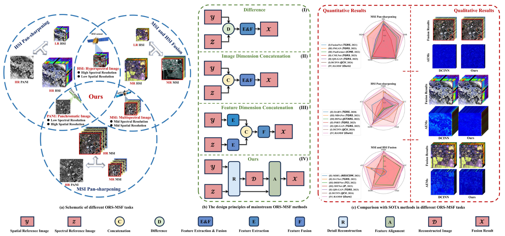
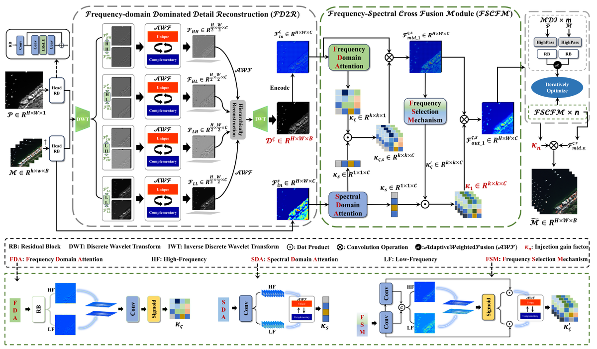
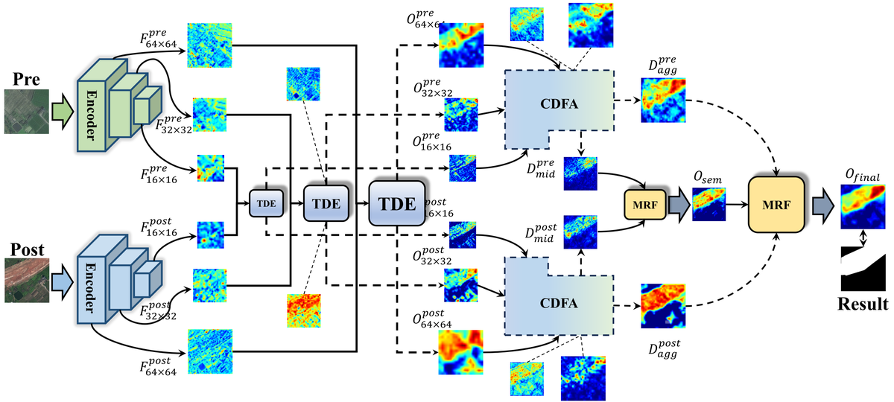
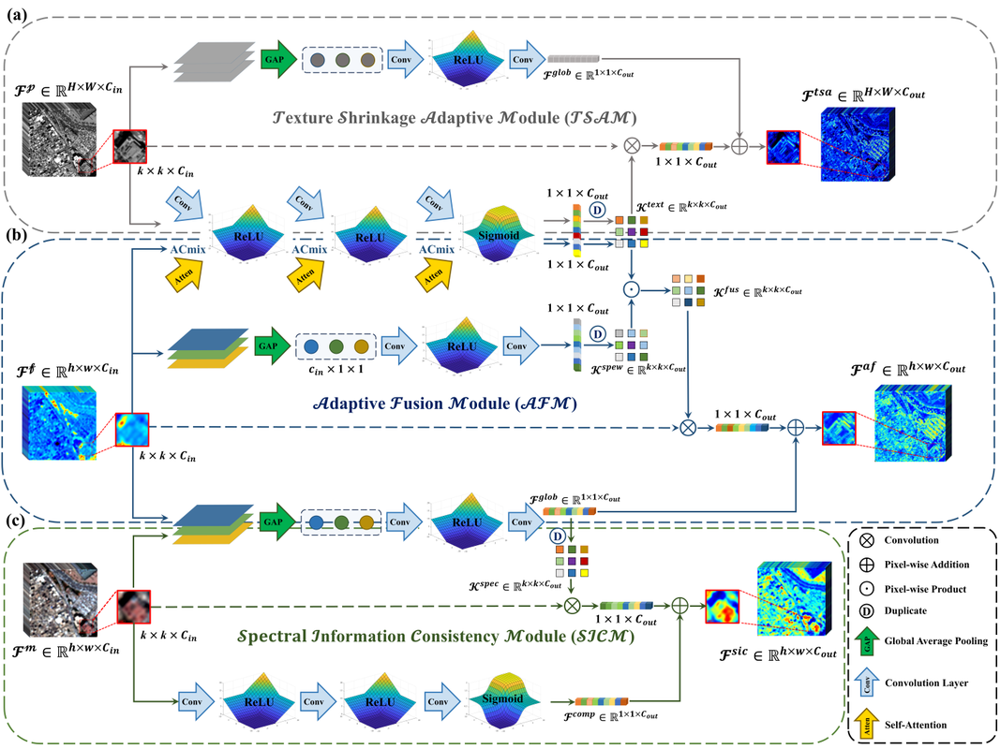
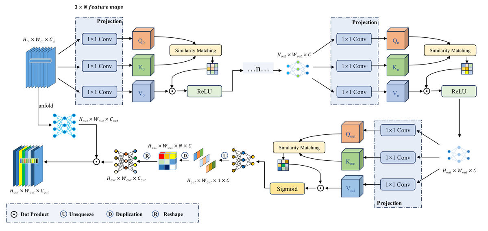

TGRS

【RAMSF】A Novel Generic Framework for Optical Remote Sensing Multimodal Spatial-Spectral Fusion Citation: 12
IEEE Transactions on Geoscience and Remote Sensing, 2025.
Ph.D. Student · State Key Laboratory of Information Engineering in Surveying, Mapping and Remote Sensing, Wuhan University
📧 laxiojustmoveon@gmail.com / chuang.liu@whu.edu.cn
我目前聚焦于 AI + Remote Sensing 智能体、遥感多模态智能体、视觉语言/大模型驱动的遥感理解、工具调用与知识推理、图像融合/复原、变化检测，以及面向大规模地理空间数据的智能分析工作流。如果你的研究方向与我相近，或对我的工作感兴趣，欢迎交流与合作；邮箱和微信二维码见左侧栏。
My current research focuses on AI + Remote Sensing agents, multimodal Earth-observation intelligence, vision-language reasoning, tool-augmented remote-sensing analysis, image fusion/restoration, and change detection. If your research interests are related to mine, or if you are interested in my work, I am open to collaboration. My email and WeChat QR code are available in the left sidebar.
My research interests include AI4RS Agents, Multimodal Large Vision-Language Models for Remote Sensing, Earth-Observation Foundation Models, Spatial-Spectral Representation Learning, Remote Sensing Image Fusion/Restoration, and Change Detection.
One work related to interpretable pan-sharpening with explicit spatial-spectral closed-loop priors was accepted by Pattern Recognition.
One work related to joint representation learning and mixture-of-experts for pan-sharpening was accepted by IEEE GRSL.
One work related to role-specialized LLM agents for medical decision-making was accepted by ICLR 2026.
One work related to exemplar retrieval and in-context learning for multi-step reasoning was accepted by ICASSP 2026.
“Most Beautiful College Student” Honor; one of five graduate students selected university-wide.





Building agentic AI systems that combine multimodal perception, vision-language reasoning, domain knowledge, and tool/data interaction for remote-sensing interpretation and geospatial decision support.
Developed neural frameworks for optical multimodal image fusion, including pan-sharpening, multispectral/hyperspectral image fusion, and Earth-observation data-gap recovery.
Designed spatial-temporal difference aggregation models for Gaofen-2 multitemporal cropland image change detection and pixel-level prediction.
Worked on cloud-edge-device collaborative intelligent service architecture, efficient visual perception, real-time inference, and robust processing for high-resolution satellite image streams.
Wuhan University
State Key Laboratory of Information Engineering in Surveying, Mapping and Remote Sensing | Ph.D. in Surveying and Mapping Engineering
Hubei University of Technology
School of Computer Science | M.Eng. in Computer Technology
Supervisor: Prof. Mi Wang · RSONE Remote Sensing Image Precision Processing and Intelligent Service Team.
I am a Ph.D. student at LIESMARS, Wuhan University. The team focuses on precise remote-sensing image processing, quality improvement, high-precision geometric positioning and mapping, onboard processing, and real-time intelligent services for remote-sensing satellite constellations.